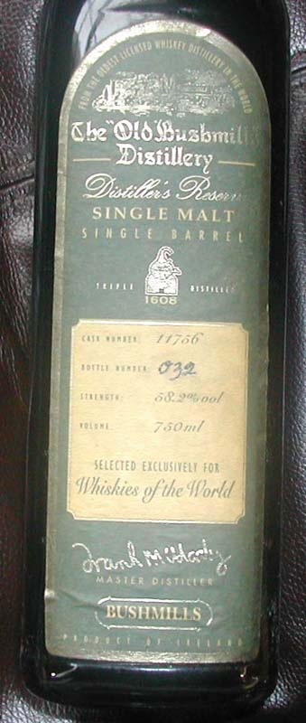
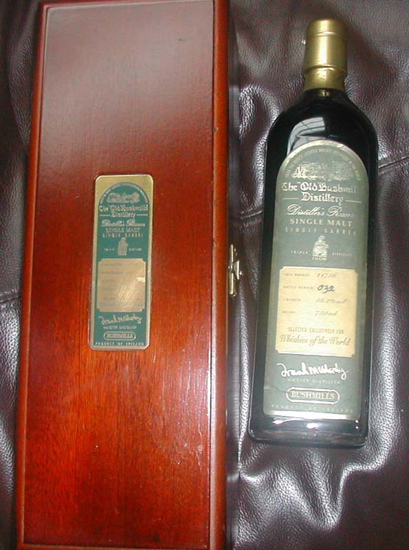

Page 1 of 1
Belfast Whiskey Bars

Posted:
Mon Jul 13, 2009 4:18 pmby beeandvee88
All you Bushmills afficiandos out there may appreciate a trip to the Duke of York, Cathedral Quarter, Belfast. This bar has a very wide range of Bushmills (not sure how many but definitely double figures) including many single cask bottlings going back many years.
It is also the only bar I know which sells Coleraine 34YO by the shot.
Does anyone know any other?
beeandvee88
Re: Belfast Whiskey Bars
Posted:
Mon Jul 13, 2009 4:23 pmby JohnM
Is this the one owned by Willie Jack?
Re: Belfast Whiskey Bars
Posted:
Mon Jul 13, 2009 4:26 pmby beeandvee88
Don't know about that - I do know the owner has Bushmills links/ contacts.
beeandvee88
Re: Belfast Whiskey Bars
Posted:
Tue Jul 14, 2009 4:57 pmby Michael Foggarty
Ye thats Willies pub, cracking little whiskey bar, there is also Biddles Bar too.
Re: Belfast Whiskey Bars
Posted:
Wed Jul 15, 2009 6:25 pmby beeandvee88
Following up bars in which you can sample Coleraine 34YO I attach link to the famous whisky bar at the Hunting Lodge (Scotland) with list but 2006, so out of date.
http://www.scribd.com/doc/6388442/2006- ... odge-HotelThis list also has a few Bushmills I have been looking for for a while.
No. 41 of cask 2328 for Coca Cola - I think from recollection there was less than a full cask of these bottled ??
No. 308 of Cask 12488 for Downtown Radio - I contacted Downtown about this a number of years ago - they replied to say although they recalled it they didn't have one and they reckoned there were "a lot of empty bottles"
No. 250 of Cask 11756 for Whiskies of the World - I actually had a couple of single cask Bushmills from WotW including a bottle from this cask but all now (long ago) drunk.
Does anyone know anywhere else which has these whiskies or has anyone any of them in their collection?

beeandvee88
Re: Belfast Whiskey Bars
Posted:
Wed Jul 15, 2009 8:04 pmby IrishWhiskeyChaser
Stayed there while on Ally's Islay trip in October 2007 ... can't say I remember the Coleraine being there but these things do get hazy as the night goes on

. However they did have a bottle of Black Bowmore for a snip at £200 per shot

Re: Belfast Whiskey Bars
Posted:
Wed Jul 15, 2009 8:08 pmby jcskinner
To my knowledge, you've just named three of the earliest four single cask offerings from Bushmills in the modern era (the fourth was a second for Whiskies of the World), Mr BeeandVee.
I'd reckon all four of those would be rare as hen's teeth by now, if not their entire stocks consumed or now hiding in collections.
I've seen the Downtown Radio and Coke bottlings, but never tasted any of the above. If I were on a serious hunt to try them, likely I'd begin in the Duke of York, actually. He seems to have dozens of different Bushes behind the bar. As for buying a bottle, I wish you the very best of luck, and if you ever hear of two of any of them for sale, do let me know because I'd be keen to grab one of any of these bottlings too!
Re: Belfast Whiskey Bars
Posted:
Wed Jul 15, 2009 8:16 pmby beeandvee88
Yes - I had both the WWotW bottles at a time - but now drunk.
I also believe that Bushmills bottled special bottles for (possibly) visitors to the distillery (going back to early 1990s - part of a draw - I think and also for presentation to certain parties (e.g. Bushmills bar of the year or Off Licence of teh year - these may have been taken from a Single cask?? There used (again 15+ years ago) to be one of these 'special' bottles in a window in an off licence in Magherafelt, Co. Derry
beeandvee88
Re: Belfast Whiskey Bars
Posted:
Wed Jul 15, 2009 8:19 pmby IrishWhiskeyChaser
Hey JC, if your talking to Willie Jack ask him if he's interested in an old
Bushmills Pure Malt.
I'm really in 2 minds about this one. Would love to crack it open but would let it go for a decent offer.
My issue with opening these bottles is being very dissappointed if they are under par whiskies and would of been better off staying in a collection
Re: Belfast Whiskey Bars
Posted:
Wed Jul 15, 2009 8:24 pmby jcskinner
I've got one of similar vintage, IWC. Thirties bottling, I think. My bottle states the proof level in Gay Lussac, and dates the founding of the distillery to 1784.
I'm inspired to make a wee diversion down to the Duke next Sunday maybe. Might bring a few quid along with me and see what he's asking for a shot of the Coleraine 34 yo.
Re: Belfast Whiskey Bars
Posted:
Sun Dec 12, 2010 8:32 pmby ConorSE19
Maybe someone on here could enlighten me about a bottle of Bushmills whiskey that I have and, if possible, let me know if it is a rare bottle. I was presented the bottle about in 1995 and I believe it already was of some age then although I have no idea how old. I have tried to do a bit of research on it but never came across one similar.
It is a single malt single barrel whiskey and it is very dark in colour (much darken than any others I’ve seen). The label on the bottle is a dark green with gold lettering and there is a gold panel with some info on it. It says Cask Number: 11756, Bottle Number: 032 (this is handwritten), Strength: 58.2%vol, Volume: 750ml.
The bottle came in a presentation box (mahogany-like and lined inside) which has a little brass plaque on it with the same label information engraved on to it.
I’m wondering if this is something that might raise any interest.
Thanks for considering.
Re: Belfast Whiskey Bars
Posted:
Sun Dec 12, 2010 8:58 pmby IrishWhiskeyChaser
Basically a bottle like this I presume

The colour is amazing and very interesting ... Probably a sherry cask and same era as above
This was Distilled in 1984 and bottled in 1996 making it a 12yo so yours is probably a 10-12 year old also.
If you could post a picture it would be a great help.
However I'm guessing around 150-200Euro depending on interest. It's a pity really as a bottle like this should realise more but unfortunately the collectablity of Irish Whiskey has not developed in any way as close to Scotch single malts. Best of luck looking for a home for this
Re: Belfast Whiskey Bars
Posted:
Sun Dec 12, 2010 9:10 pmby TheWhiskeyBro
Hi there Cask #11756 is one of the earlier single casks.
This was bottled for 'Whiskies of the World' Alders Duty Free, d. Dec 1984 b. June 1996 and is a 10 year old, 1 of 250 bottles.
It is afaik a heavily sherried single malt.
I'd agree with the previous estimate!!!
PM me if you are thinking of selling, many thanks TWB
Re: Belfast Whiskey Bars
Posted:
Tue Dec 14, 2010 12:04 amby jcskinner
I'd be very interested in this bottle.
PM sent.
Re: Belfast Whiskey Bars
Posted:
Thu Dec 16, 2010 3:19 pmby ConorSE19
Thanks for the info about this - much appreciated. I don't think I really want to part with this.
- 
- B1.jpg (70.46 KiB) Viewed 1358 times
- 
- B2.jpg (100.88 KiB) Viewed 1358 times
{kind=link}